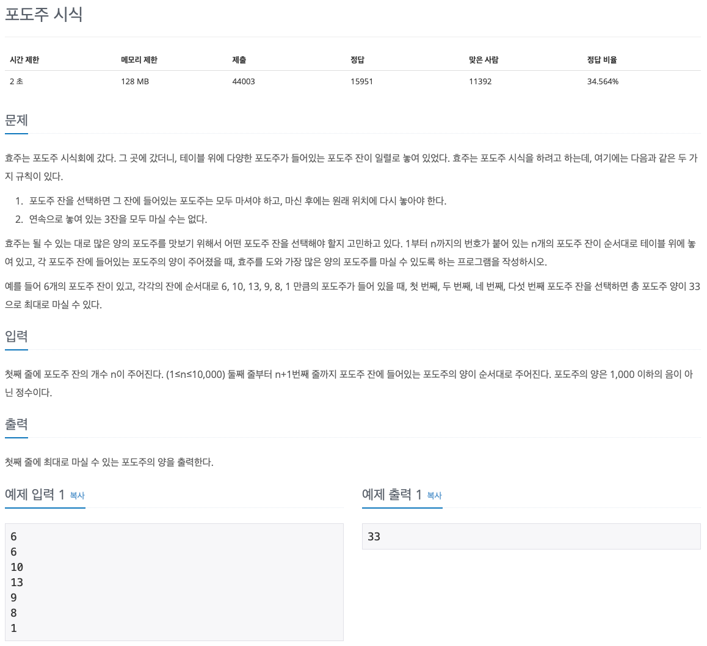

백준 문제 풀이: 2156 - 포도주 시식

문제 파악
연속으로 3잔을 선택하지 않고, 마신 포도주 양이 최대가 되도록 포도주 잔을 선택했을 때, 포도주 양을 구하는 문제이다.
연속 1잔, 2잔까지는 허용하도록 선택하는 것에 유의해 문제를 푼다.
문제 풀이
동적 계획법(Dynamic Programming)을 이용해 포도주의 잔이 적을 때부터 단계적으로 풀어나가면 된다.
여기서 핵심은 작은 문제에서 어떠한 값들을 기록하며 최종 문제에 도달할 것인지이다.
i번째에서 구한 최대 포도주 양을 max_amount(i)라 하면, 포도주가 한 잔 추가됐을 때의 최대 포도주 양을 어떻게 구할지 생각해봐야 한다.
일단, 경우의 수가 어떤 것이 있는지 알아보자.
이 문제에서 가장 중요한 규칙은 "연속으로 놓여 있는 3잔을 모두 마실 수는 없다."이다.
이 말은 즉, 연속으로 잔이 놓이지 않도록 경우를 나눠 생각해볼 수 있다.
이를 마지막에 연속으로 마신 잔의 수에 의한 기준으로 다음과 같이 경우를 나눌 수 있다.
0일 때:i번째 포도주는 마시지 않으므로, 이전의 최대 포도주 양에 해당한다.1일 때:i번째 포도주는 마시고,(i - 1)번째 포도주는 마시지 않으므로,(i - 1)번째에 마지막에 연속으로 마신 잔의 수가 0일 때의 최대 포도주 양에i번째 포도주 양을 더한다.2일 때:i,(i - 1)번째 포도주를 모두 마시므로,(i - 1)번째에 마지막에 연속으로 마신 잔의 수가 1일 때의 최대 포도주 양에i번째 포도주 양을 더한다.
여기서 주의할 점은 0의 경우에서 이전의 최대 포도주 양을 구할 때, (i - 1)번째 최대 포도주 양 중의 최대값을 구해야 한다는 것이다.
왜냐하면, i번째 포도주를 마시지 않으므로 (i - 1)번째의 마지막에 연속으로 마신 잔의 수는 무관하기 때문이다.
몇 잔을 마시든 최대 포도주 양만 구하면 된다.
이런 식으로 마지막에 연속으로 마신 잔의 수에 따른 최대 포도주 양을 잔의 수에 따라 기록한다.
최종적으로 마지막 잔에 대해 최대 포도주 양을 구하고, 그 때의 최대 포도주 양 중의 최대값이 정답이 된다.
Python 입력 방식에 따른 수행 속도 차이
기존에 하던 방식대로 input() 함수를 이용해 입력을 처리했더니, 약 436ms의 속도가 나왔다.
그런데 다른 사람의 수행 속도는 64ms로 큰 차이가 있었다.
로직의 차이가 있는지 알았으나 큰 차이가 없었다.
검색 끝에 알게된 사실은 Python으로 알고리즘 풀이를 할 때는 input() 함수 대신 sys 모듈의 sys.stdin 객체를 이용해야 속도가 향상된다는 것이다.
실제로 sys.stdin 객체를 이용해 똑같은 로직을 적용하니, 다른 사람과 동일하게 64ms의 속도가 나왔다.
이는 input() 함수와 sys 모듈의 입력 함수들의 로직에 차이가 존재하기 때문인 것 같다.
(자세한 내용은 다양한 의견이 있으므로, 검색을 통해 공부하는 것이 좋을 것 같다.)
sys.stdin 객체는 파일의 끝까지 한 번에 입력받는 방식이다.
CLI에서 입력을 완료하기 위해서 마지막에 EOF(End Of File) 문자 입력이 필요하다.
Control(Ctrl) + D 키로 입력할 수 있다.
한 줄씩 입력한다면, sys.stdin.readline() 함수를 사용하면 된다. 이때는 EOF 문자를 입력할 필요가 없다.
이 문제에서는 첫 줄에 입력받는 n은 필요하지 않아, 간단히 input() 함수를 통해 버리도록 했다.
또한, sys.stdin 객체를 for 문에 바로 사용하거나, map() 함수로 바로 맵핑할 수도 있다.
이때, 한 줄마다 for 문 로직이 실행된다는 점과 sys.stdin 객체를 통해 반환되는 각 문자열은 개행 문자를 제거하지 않는다는 점에 주의하도록 한다.
다음과 같이 입력받은 대로 출력하는 코드를 실행시켜보면, 개행 문자가 포함되어 있는 것을 확인할 수 있다.
1
2
3
import sys
for i in sys.stdin:
print(i)
결과를 보면, 3, 6번째 줄에 개행 문자가 포함되어 있어, 개행이 한 번 더 일어난다.
1
2
3
4
5
6
Hello
Hello
World!
World!
풀이 소스
문제 풀이 환경: Python 3.7
1
2
3
4
5
6
7
8
9
10
11
12
13
14
import sys
input()
amounts = map(int, sys.stdin)
max_amounts = (0, 0, 0)
for amount in amounts:
max_amounts = (
max(max_amounts),
max_amounts[0] + amount,
max_amounts[1] + amount
)
print(max(max_amounts))